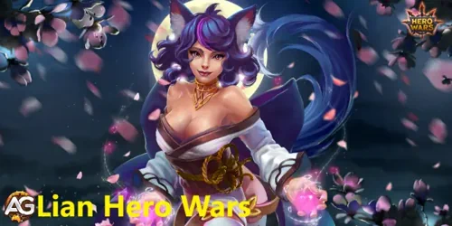
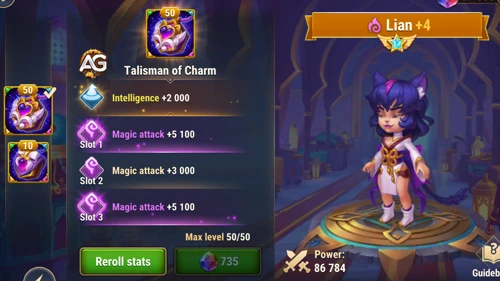
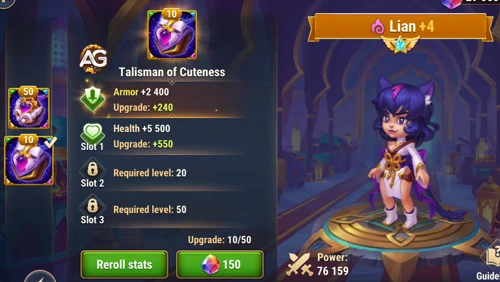
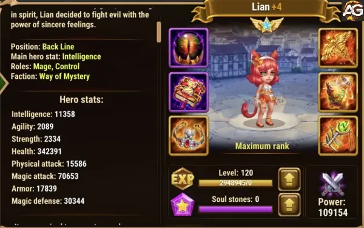

Estratégias Eficientes para Usar Lian em Hero Wars Alliance
- Por: Alexandre Domingos. .
Lian é uma personagem poderosa em Hero Wars Alliance, com habilidades únicas que podem mudar o curso de uma batalha. Seu domínio sobre o encantamento é incomparável, tornando-a uma escolha valiosa, especialmente contra adversários que dependem de ataques em área e dano em massa. Neste tutorial, vamos explorar estratégias eficazes para utilizar Lian ao máximo de seu potencial.
Revelando Lian: Visão Geral do Personagem e Tier List Geral
| Atributos Principais | Detalhes |
|---|---|
| Posição: | Linha de Fundo |
| Função: | Controle, Mago |
| Classe de Glifo: | Mago |
| Estatísticas principal: | Inteligência |
| Facção: | Mistério |
| Como conseguir: | Eventos, baú heroico, loja grande arena |
| Tier List 2025 | Ranque |
|---|---|
| Tier List Geral: | A |
| Tier List de Hidra: | B |

Conheça as Habilidades de Lian
Antes de mergulharmos nas estratégias, é crucial entender as habilidades de Lian:
- Encantamento: Esta habilidade encanta todos os inimigos, adormecendo-os por 7 segundos. Inimigos despertam ao sofrer dano, mas o ataque de Lian não os desperta.
- Baile Hipnótico: Lian dispara uma bola mágica nos inimigos mais próximos, causando dano puro por onde passa. Esta habilidade pode causar um total de 54.226,5 de dano.
- Luzes Inconstantes: Ela cria 5 esferas mágicas e as lança contra o inimigo mais próximo, causando dano mágico. Cada esfera pode causar até 32.535,9 de dano.
- Conciliação: Esta é uma habilidade passiva. Quando Lian sofre dano, o inimigo que causou o dano é encantado por 4 segundos.
Estratégias de Uso
-
Controle de Multidões
Lian brilha quando se trata de controle de multidões. Use sua habilidade Encantamento para adormecer todos os inimigos por 7 segundos. Isso pode ser crucial para interromper combos devastadores de heróis inimigos, especialmente aqueles que dependem de ataques em área.
-
Combos Devastadores
Combine as habilidades de Lian com as de seus aliados para criar combos devastadores. Por exemplo, sincronize o Encantamento de Lian com habilidades de dano em área de outros heróis para maximizar o potencial de controle de multidões e dano.
-
Contra-Ataque Eficiente
Aproveite a habilidade passiva de Conciliação de Lian para realizar contra-ataques eficientes. Quando ela sofre dano, o inimigo que o causou será encantado por 4 segundos. Use este tempo para lançar ataques poderosos e desequilibrar o campo de batalha a seu favor.
-
Foco em Alvos Principais
Priorize seus ataques nos alvos mais importantes. Use Luzes Inconstantes para causar dano concentrado ao inimigo mais próximo. Isso pode ser especialmente útil para eliminar ameaças de longo alcance ou curandeiros inimigos que estão apoiando sua equipe.
-
Adaptação à Situação
Esteja preparado para adaptar suas estratégias com base na composição do time inimigo e nas condições da batalha. Lian é versátil e pode desempenhar diferentes papéis dependendo da situação. Seja flexível e esteja disposto a ajustar suas táticas conforme necessário.
Análise do Talismã de Encanto de Lian
Lian é uma heroína muito forte com uma habilidade Suprema incrível, e agora com seu Talismã de Encanto, ela se tornou ainda mais poderosa. Ela não é uma heroína focada em causar muito dano, mas sim em usar suas habilidades para encantar os inimigos.
Aumentar o nível do Talismã de Encanto de Lian não é uma prioridade para iniciantes, mas certamente a torna muito forte com este talismã.
| Slot | Estatísticas | Pontos |
|---|---|---|
| 0 | Inteligência | +2000 |
| 1 | Ataque Mágico | +6600 |
| 2 | Ataque Mágico | +6600 |
| 3 | Ataque Mágico | +6600 |

Análise do Talismã de Fofo de Lian
O segundo talismã de Lian, o Talismã de Fofo, é crucial para aprimorar seu papel de suporte na Hero Wars Alliance. Ao fornecer armadura e pontos de vida adicionais, este talismã aumenta significativamente sua sobrevivência, permitindo que ela permaneça mais tempo no campo de batalha e cumpra sua principal função: paralisar inimigos com suas habilidades de encantamento. Com esse aumento, Lian se torna mais resistente a ataques e mais eficaz como heroína de suporte.
Como o papel principal de Lian não é causar dano, mas manter os inimigos sob controle, o Talismã de Encanto é ideal para torná-la mais resistente. A vida extra absorve tanto dano físico quanto mágico, e a armadura reduz ataques físicos, o que significa que, posicionada na retaguarda, ela consegue sobreviver mais tempo e lançar suas habilidades com maior frequência. Essa durabilidade oferece mais oportunidades para seus aliados derrotarem os oponentes enquanto Lian mantém os inimigos ocupados.
O Talismã de Fofo dificulta para os inimigos eliminarem Lian rapidamente, permitindo que ela encante e coloque os inimigos para dormir repetidamente, o que atrapalha os ataques e as estratégias deles. Esse segundo talismã é ideal para o papel de Lian, aumentando sua eficácia ao mantê-la viva e ativa, garantindo que ela possa continuamente dificultar a ação da equipe inimiga.

Pontos Negativos
- Causa pouco dano
- Se um aliado atingir um inimigo adormecido ele ira acordá-lo imediatamente
Prioridades de Evolução
Glifos
Nos glifos de Lian priorize Vida e Inteligência para ganhar durabilidade, depois defesa mágica e armadura e por último ataque mágico.
| Prioridade | Glifos |
|---|---|
| 1ª | Vida |
| 2ª | Inteligência |
| 3ª | Armadura |
| 4ª | Defesa Mágica |
| 5ª | Ataque Mágico |
Artefatos
Nos artefatos de Lian suba de nível primeiro o livro para ganhar vida, depois o anel para ganhar defesa mágica, e por último a arma.
| Prioridade | Artefatos |
|---|---|
| 1ª | Livro |
| 2ª | Anel |
| 3ª | Arma (Ataque mágico) |
Visuais de Lian
A prioridade de Lian está em melhorar sua sobrevivência e utilidade para a equipe. Vida e Armadura são essenciais para mantê-la mais tempo em combate, apoiando os aliados de forma eficaz. Inteligência melhora a versatilidade de suas habilidades, enquanto Defesa Mágica garante resistência contra inimigos focados em magia. Esses atributos permitem que Lian desempenhe seu papel como uma heroína de suporte durável, focada em proteger sua equipe.
A Skin Esmagadora tem uma boa sinergia com o dano puro de Lian, direcionando de forma eficaz os inimigos com menor vida. Esse redirecionamento focado aprimora sua capacidade de eliminar oponentes mais fracos, tornando-a uma opção de suporte mais forte quando combinada com heróis como Dorian, que amplificam a cura com base no dano causado.
| Prioridade | Skins |
|---|---|
| 1ª | Vida |
| 2ª | Armadura |
| 3ª | Inteligência |
| 4ª | Defesa Mágica |
| 5ª | Esmagamento |
| 6ª | Ataque Mágico |

Lian vs Hidras
Lian não é um grande herói para a hidra, como suporte ela causa pouco dano mágico nas habilidades.
- Veja mais dicas de times para hidra no nosso tutorial de estratégias para hidras.
Lian em Batalhas
Lian é Forte Contra
- Keira, Ginger, Orion, Iris, Mojo, Dorian, Juiz, Galahad, Jhu
Lian Melhores Counters
| Counters | O que acontece |
|---|---|
| Quando Lian usa sua habilidade Baile Hipnótico ou Luzes Inconstantes consegue causar múltiplos danos aos inimigos de linha de frente e o Altar do Corvus retribui com dano puro. | |
| Cornelius ataca o inimigo com mais inteligência causando muito dano físico com um enorme monólito. | |
| Fobos tortura o inimigo com maior ataque mágico causando dano mágico, enquanto tortura Fobos não ataca o inimigo, dessa forma Lian não pode encantá-lo. |


Guia: Melhores Times com Lian em 2024
Lian é uma personagem versátil em Hero Wars Alliance, capaz de se integrar a diferentes equipes e contribuir para a vitória com suas habilidades únicas. Neste guia, apresentaremos algumas das melhores combinações de times envolvendo Lian. Cada equipe listada abaixo foi cuidadosamente selecionada com base em sinergias de habilidades e eficácia comprovada em diferentes contextos de batalha.
1. Lian, Astrid, Isaac, Judge, Julius
Esta equipe se destaca por sua capacidade de controle de multidões e dano concentrado. Astrid e Isaac fornecem suporte adicional, enquanto Judge e Julius garantem resistência e proteção.
2. Lian, Jorgen, Mojo, Alvanor, Mushy
Um time equilibrado com um forte foco em buffs e debuffs. Jorgen e Mojo são excelentes em controlar o campo de batalha, enquanto Alvanor e Mushy causam danos significativos aos inimigos.
3. Aidan, Lian, Xe'sha, Kayla, Cleaver
Uma equipe agressiva com grande capacidade de sobrevivência. Lian fornece controle de multidões, enquanto Aidan e Cleaver são os principais atacantes. Xe'sha e Kayla oferecem suporte adicional e cura.
4. Aidan, Lian, Jorgen, Kayla, Cleaver
Similar à equipe anterior, mas com a adição de Jorgen para aumentar o controle de multidões e debuffs. Esta equipe é eficaz tanto na ofensiva quanto na defensiva.
5. Lian, Sebastian, Ishmael, Tristan, Ziri
Uma equipe centrada em Lian para controle de multidões e dano. Sebastian e Ishmael oferecem dano adicional, enquanto Tristan garante perfuração de armadura e Ziri garantem proteção e sustentação.
6. Lian, Faceless, Nebula, K'arkh, Astaroth
Uma equipe focada em buffs e danos massivos. Faceless e Nebula aumentam o poder de ataque de K'arkh, enquanto Astaroth fornece resistência e proteção.
7. Lian, Faceless, Jorgen, Celeste, Aurora
Uma equipe equilibrada com foco em controle de multidões e suporte. Jorgen e Faceless garantem controle sobre o campo de batalha, enquanto Celeste e Aurora oferecem cura e buffs.
8. Lian, Amira, Celeste, Satori, Astaroth
Uma equipe com forte capacidade de cura e dano concentrado. Amira e Satori são os principais atacantes, enquanto Celeste fornece suporte curativo e Astaroth proteção.
9. Lian, Jorgen, Celeste, Satori, Astaroth
Similar à equipe anterior, mas com a adição de Jorgen para mais controle de multidões e debuffs. Esta equipe é eficaz em prolongar a batalha e desgastar os inimigos.
10. Lian, Faceless, Celeste, Satori, Astaroth
Uma equipe versátil com foco em controle de multidões e dano concentrado. Faceless e Celeste oferecem suporte adicional, enquanto Satori e Astaroth lidam com o dano.
11. Martha, Lian, Celeste, Satori, Astaroth
Uma equipe com ênfase em sustentação e controle de multidões. Lian e Astaroth fornecem proteção adicional, enquanto Celeste e Martha cuidam da cura, Satori cuida do dano.
12. Lilith, Peppy, Dorian, Phobos, Lian
Uma equipe única com foco em buffs e debuffs. Lilith, Peppy e Phobos causam confusão nos inimigos, enquanto Dorian fornece suporte curativo e Lian controla multidões.
Conclusão do Guia da Lian
Lian é uma adição valiosa a qualquer equipe em Hero Wars Alliance, graças às suas habilidades de controle de multidões e capacidade de causar danos significativos. Ao dominar suas habilidades e implementar estratégias eficazes, você pode aproveitar ao máximo o potencial de Lian e garantir a vitória para sua equipe. Experimente diferentes combinações e táticas para descobrir o que funciona melhor em diferentes situações de batalha. Que suas aventuras com Lian sejam repletas de sucesso e glória em Hero Wars Alliance!
Sugestões de Vídeo:
Você pode ter interesse:
 Andvari
Andvari Dorian
Dorian K'arkh
K'arkhDeixe Sua Opinião!
Você gostou do nosso Guia da Lian? Há algo que não entendeu ou gostaria de sugerir mudanças? Convidamos você a se juntar à nossa sessão de comentários na página do Alexandre Games Blog. Não hesite em expressar sua opinião, clarificar suas dúvidas e compartilhar sua sugestões.
Clique no botão abaixo para começar: